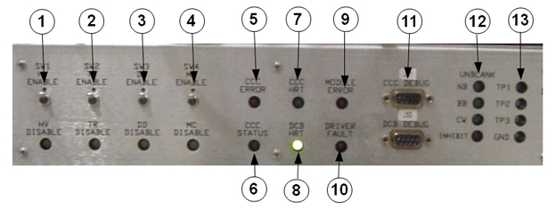

- 00000018WIA30BC6030GYZ
- id_123733111.7
- May 7, 2025 8:34:27 AM
Driver Module
Overview
The driver module supplies system head and body TR switching bias, dynamic disable switching bias, and (where used) direct drive switching bias.
During installation, and anytime hardware is replaced in any of the transmit, dynamic disable, or direct drive circuits, the driver module must be calibrated. This is done using a software tool located on the Common Service Desktop, under . No special setup is required.
The switches along the top of the unit allow the various sense circuits and the high voltage output to be disabled during service. These should always be enabled during normal scanning.

| Item | Toggles, LEDs, and Connections | Description |
|---|---|---|
| 1 | SW1 HV enable/disable toggle and LED | In DISABLE (down) position, the amber LED illuminates, and high voltage supplied to dynamic disable and direct drive circuits is set to zero volts. Scanning is not possible with this toggle in DISABLE position, because the system immediately faults and posts a message to the log indicating that the high voltage level is too low. |
| 2 | SW2 TR enable/disable toggle and LED | In DISABLE (down) position, the amber LED illuminates, and any fault conditions present on the head or body TR bias circuits are ignored. Otherwise, the TR bias operates normally. Although scanning is permitted with toggle in this position, use with caution and only as directed because pulsing RF on transmit lines (when a true TR fault condition exists) can result in hardware damage. |
| 3 | SW3 DD enable/disable toggle and LED | In DISABLE (down) position, the amber LED illuminates, and any fault conditions present on the DD (Dynamic Disable and Direct Drive) bias circuits are ignored. Otherwise, the DD bias operates normally. Although scanning is permitted with the toggle in this position, use with caution and only as directed because pulsing RF on transmit lines (when a true DD fault condition exists) can result in hardware damage. |
| 5 | CCC error LED | Illuminates if the CCC board inside the driver module faults. The driver module provides 24 VDC for the entire CAN link. The whole link ceases to function if this supply fails. |
| 6 | CCC status LED | Repeatedly flashes twice in quick succession when the driver module is communicating over the CAN link. |
| 7 | CCC heartbeat LED | Illuminates if the CCC board located inside the driver module faults. The driver module provides 24 VDC for the entire CAN link and that some CAN link devices may be more tolerant of reductions in this voltage than others. The failure of some devices on the CAN link, but not all, often suggests that the CAN voltage level may be poor. |
| 8 | DCB heartbeat LED | Repeatedly flashes, alternating with CCC heartbeat. |
| 9 | Module error LED | Illuminates if a fault occurs that would normally not stop scanning, such as a power supply out of limit or fan status fault. Information for each of these faults is logged as an entry to the system error log. |
| 10 | Driver fault LED | Illuminates when a fault occurs that would normally interrupt scanning, such as a TR driver fault, dynamic or direct drive disable fault, or other internal hardware failure. |
| 11 | J31 CCC_DEBUG | Standard RS-232 data ports. Access is not normally required because the existing driver module diagnostics provide the same information in an easy-to-read format. |
| J32 DCB_DEBUG | ||
| 12 | Narrowband (NB) unblank LED | Indicates the state of the unblank signal used for the narrowband. |
| Broadband (BB) LED | Indicates the state of the unblank signal used for the broadband. | |
| Continuous wave (CW) LED | Indicates the state of the unblank signal used for the continuous wave. | |
| Inhibit LED | Indicates the state of the unblank signal. When LED is illuminated, the unblank signal is inhibited. The unblank signal can be inhibited by the system for reasons other than a fault event. Therefore, the illumination of this LED does NOT, by itself, indicate a fault condition unless accompanied by illumination of another fault LED or a fault message posted to message log. | |
| 13 | Test 1 | Test points for the attachment of an oscilloscope probe to visually inspect these signal patterns from an oscilloscope display. Test point labeled GND is signal ground. |
| Test 2 | ||
| Test 3 | ||
| GND (ground access) |